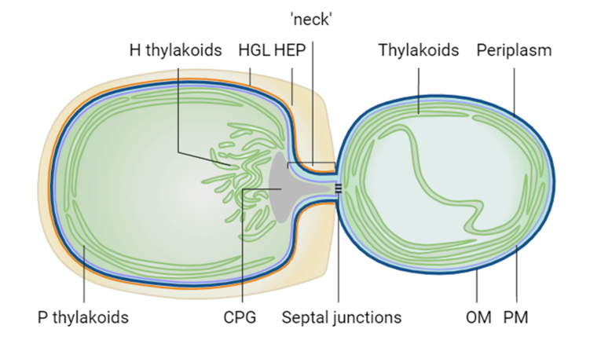

mRNA Localisation and Thylakoid Protein Biogenesis in Cyanobacteria
PhD Research | Queen Mary University of London | 2019–2023

- Investigated mRNA localisation and thylakoid protein biogenesis in Anabaena sp. PCC 7120, utilising RNA Fluorescence In Situ Hybridisation (RNA-FISH) to examine the spatial distribution of mRNA species encoding photosynthetic and respiratory proteins in both vegetative cells and developing heterocysts. Identified specific sites of translation for thylakoid membrane proteins and explored the dynamics of protein targeting during heterocyst differentiation.
- Optimised RNA-FISH protocols to visualise the intracellular localisation of key mRNAs, including those encoding reaction center components and the heterocyst-specific oxidases Cox2 and Cox3. Employed ImageJ for rigorous quantification of FISH signals and analysed the distribution of mRNAs across the thylakoid membranes to gain insights into the mechanisms of protein translation and membrane insertion.
- Constructed three Anabaena mutants, including a knockout of the RNA-binding protein RbpG, which is involved in the stabilisation and spatial coordination of photosynthetic mRNA localisation. Demonstrated that RbpG is crucial for the proper translation and assembly of thylakoid membrane proteins, as the rbpG null mutant exhibited defects in mRNA levels, thylakoid membrane structure and photosynthetic complex distribution.